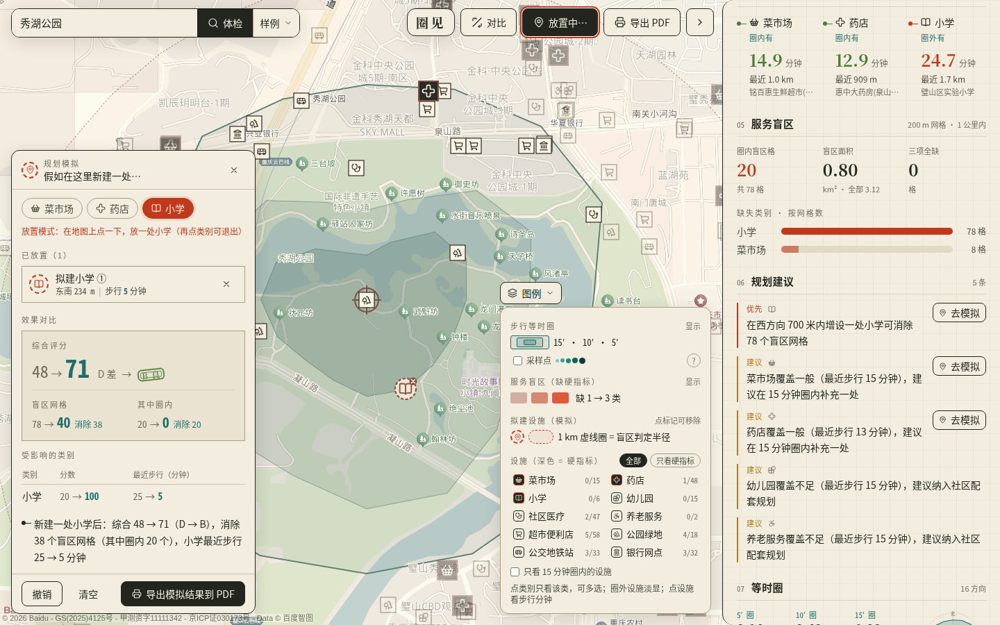
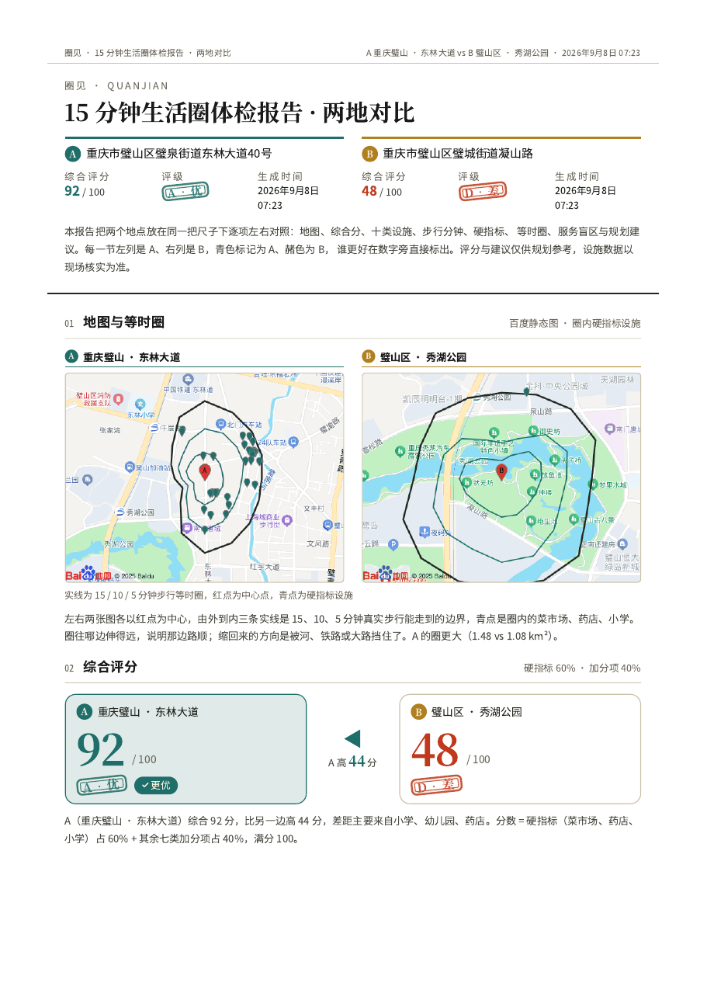
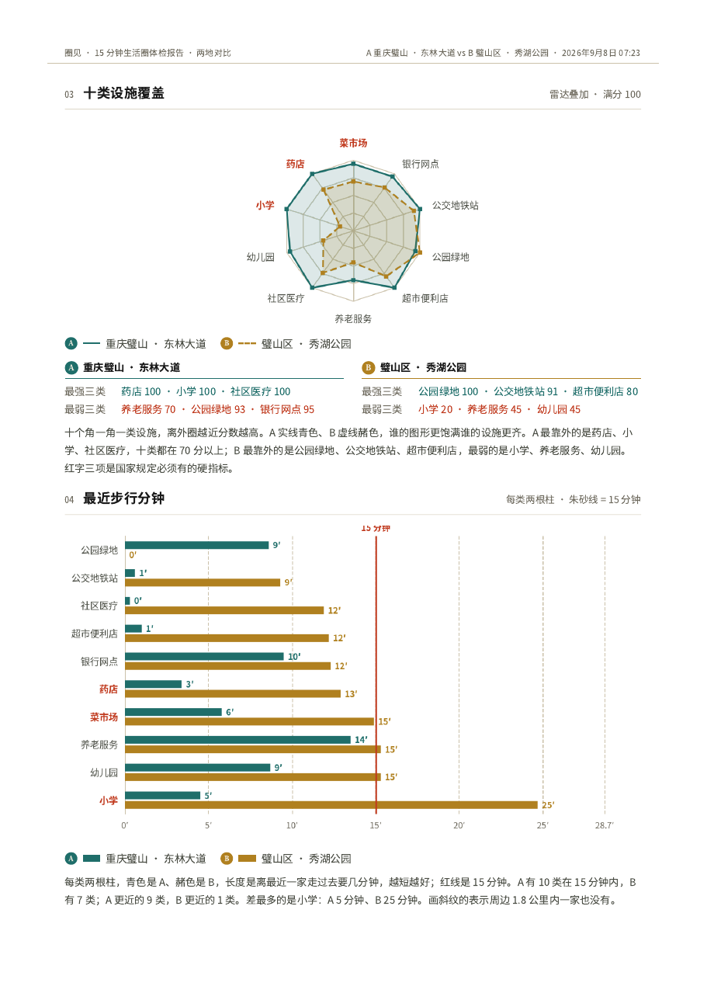

圈见
基于百度地图开放能力的「15 分钟生活圈」智能体检与规划助手
点一个地方，15 秒内告诉你这里的 15 分钟生活圈缺什么、缺在哪、该往哪补 。等时圈来自真实路网算路，不是直线圆。
43.5%
实测 15 分钟等时圈面积 ÷ 1080 m 直线圆
6.5 s → 25 ms
一次完整体检，冷缓存 → 热缓存
圈见 · 作品介绍 封面
圈见 · 作品介绍 一 · 项目背景与痛点
01 项目背景与痛点「15 分钟社区生活圈」已从上海的城市实践上升为国家技术标准，但基层街道和普通居民手里，至今没有一件能把「走 15 分钟能到哪、缺什么」算清楚的工具。
政策要求越来越具体，工具却停留在直线圆
上海 2016 年在《上海市 15 分钟社区生活圈规划导则》中率先提出这一概念；2021 年自然资源部发布《社区生活圈规划技术指南》（TD/T 1062-2021），对菜市场、药店、小学等设施给出了明确的服务半径；「十四五」规划纲要把「完整社区」「15 分钟生活圈」写进了城市更新任务。要求已细到每类设施的步行距离，但常见的评估办法仍是以中心点画一个 1000 m 或 1080 m（1.2 m/s × 15 min）的直线圆，数圆内有几家。
道路不是直线
河流、铁路、封闭小区、立交与快速路，会让「直线 1 公里」变成「步行 25 分钟」。我们在重庆璧山·璧城街道东林大道用百度批量算路实测了 112 个采样点，结果如下：
1.59 km²
15 分钟真实步行等时圈面积；1080 m 直线圆为 3.66 km²
+130%
直线圆对可达面积的高估幅度（等效半径 712 m vs 1080 m）
90 / 190
直线圆内 190 个设施，有 90 个（47%）真实步行超过 15 分钟
方向 15 分钟可达半径 相对 1080 m 收缩 说明 正南 180° 887 m 17.9% 通畅方向，750 m 采样点绕行比 1.16 西南 225° 506 m 53.1% 需绕秀湖公园水体，750 m 采样点绕行比 2.17 16 方向平均 717 m 33.6% 同一个中心点，不同方向差 1.75 倍
数据来源：docs/测试报告.md §1，脚本 scripts/verify-report.ts 可复现。同一直线距离 1060 m 的「向阳菜市场」，真实步行 1604 m / 22.9 分钟。
传统普查慢、贵、更新不了
做一次街道级设施普查，通常要 GIS 团队、完整路网数据（几十 MB 级）和实地踏勘，周期以周计；设施新开、关门之后，很难有人再跑一遍。而居民要的只是一句话：这里缺什么、缺在哪、该往哪补。
我们要解决的三件事
不要直线圆 ：等时圈必须来自真实路网步行时长，但不下载路网数据，只用地图开放 API。不要只给分数 ：识别服务盲区的位置与严重度，给出「往哪个方向、补什么」的规划建议，并能在图上模拟「新建一处」的效果。不要只能看一个点 ：两地对比、街道级批量体检，让规划部门与居民都用得上。
github.com/chunge-php/quanjian · MIT 01
圈见 · 作品介绍 二 · 产品是什么
02 产品是什么圈见 是一个开源的 Web 工具：在地图上搜地址或点一下，服务端调用百度地图开放 API 生成真实步行等时圈、体检 10 类民生设施、扫描服务盲区，并以 SSE 流式返回一份带评分、建议和 API 调用统计的报告；报告可两地对比、可模拟新建、可对整条街道批量体检、可导出 PDF。
图 1 · 主界面。 左侧百度 JSAPI GL 地图：5 / 10 / 15 分钟三环嵌套等时圈（青色）、十类设施图标（深色方块为硬指标）、服务盲区网格（赭色，深浅为严重度）、图例兼图层筛选；右侧抽屉：综合评分 51 / C、三条结论、十类雷达、最近步行分钟（朱砂线 = 15 分钟）。示例点：重庆璧山区璧城街道广场南路。
能力 1 真实路网等时圈16 方向 × 7 半径共 112 个采样点交给百度批量算路取真实步行时长，单调修正 + 线性插值 + 圆周平滑，输出 5 / 10 / 15 分钟三环嵌套多边形。不需要底层路网数据，河流、铁路、封闭小区造成的阻隔直接表现为该方向半径收缩；圆度指标 4πA/P² 量化阻隔程度。
能力 2 十类设施体检菜市场、药店、小学（硬指标）＋幼儿园、社区医疗、养老服务、超市便利店、公园绿地、公交地铁站、银行网点。多关键词检索、uid 去重、名称 / tag 黑白名单清洗后批量算路取步行分钟，按 TD/T 1062-2021 服务半径打分；硬指标任一为 D，综合评级最高 C。
github.com/chunge-php/quanjian · MIT 02
圈见 · 作品介绍 二 · 产品是什么（续）
图 2 · 两地对比。 A 东林大道 92 分（A 级）vs B 秀湖公园 48 分（D 级），双圈同屏、聚焦切换，抽屉内分数 / 雷达叠加 / 十类对照 / 硬指标 / 盲区逐项左右对照，结论按分差自动生成：「A 综合高 44 分，差距主要来自小学、幼儿园、药店」。
能力 3 盲区识别中心 ±1500 m 铺 200 m 网格（15 × 15 = 225 格，裁圆后 177 格），每格检查 1 km 内是否有全部三类硬指标，缺失数 ÷ 3 = 严重度；圈内盲区优先，4-连通合并成簇，取簇质心到最近已有设施的反方向作为建议补点方位。点击网格即可看缺失类别与建议。
能力 4 两地对比A / B 两个槽位共用一条分析流，天然串行、不会把配额打爆；对比视图只读两份报告做纯函数对照，不再调任何接口。适合居民选房、规划部门比较两个候选地块。导出 PDF 时三段分页：对比视图 → A 完整报告 → B 完整报告。

图 3 · 模拟新建。 「假如在秀湖公园西侧新建一处小学」：地图放置拟建设施（朱砂虚线 + 1 km 判定圈），浏览器本地约 1 ms 重算——综合 48 → 71（D → B），盲区网格 78 → 40，圈内盲区 20 → 0，小学最近步行 25 → 5 分钟。规划建议旁「去模拟」一键直达。
github.com/chunge-php/quanjian · MIT 03
圈见 · 作品介绍 二 · 产品是什么（续）
图 4 · 街道级批量体检。 在地图上画圆或框选范围，按点距自动铺点并逐点体检：每个点按评级着色（A 青、B 苔、C 赭、D 朱砂），右侧给出平均分、优良中差分布、十类可达占比、点位排名、最差三点与街道级结论；可切热力图，可导出街道报告 PDF。
能力 5 模拟新建拟建设施只是一个 uid 以 virtual: 开头的 POI，并入原报告后在浏览器本地重跑评分 / 盲区 / 建议，幂等、不改入参；服务端只在放置时被调一次单对算路。前后对比面板给出分数、盲区、受影响类别的变化，可撤销、可清空、可导出模拟结果 PDF。
能力 6 街道级批量体检圆形半径 300–3000 m 或矩形对角线 ≤ 6 km，点距 200–1500 m，最多 25 点，串行逐点调用同一条流水线；整批共用一个 API 客户端，相邻点位的 POI 检索大量命中缓存。快速模式 8 方向 × 5 半径（40 采样点）省一半算路，默认开启。

图 5a · 对比报告 PDF 第 1 页。 百度静态图 + 圈内硬指标设施、综合评分左右对照。

图 5b · 第 2 页。 雷达叠加、每类两根柱的最近步行分钟；每张图下方都有一段「怎么看」说明。
github.com/chunge-php/quanjian · MIT 04
圈见 · 作品介绍 三 · 技术架构
03 技术架构整体是一个 Next.js 14 应用（Node 20，standalone 输出，端口 3010）：浏览器只拿带 Referer 白名单的浏览器端 AK 渲染地图；所有 Web 服务 API 调用都在 Node 侧用服务端 AK 发起。坐标系全程 BD-09，不转换。
前端Browser
Next.js 14 App Router React 18 · TypeScript · Tailwind
百度 JSAPI GL 等时圈 / POI / 盲区 / 拟建 / 批量点 图层
ECharts 5 雷达图 · 步行分钟柱图 · 打印离屏预生成
EventSource 订阅 SSE，等时圈先画、POI 逐类落图
lib/ui 对比 · 模拟 · 槽位（纯函数，本地重算）
服务端Route Handlers
POST /api/analyze text/event-stream · zod 校验
POST /api/batch 街道级批量 · plan / progress / point / done
/api/walk · /api/health 单对算路 · 健康检查
lib/pipeline 阶段编排 → AnalyzeEvent 流
lib/baidu 令牌桶 · 并发窗口 · 指数退避 · 两级缓存 · 降级
算法层Pure functions
lib/isochrone 扇形采样 · 单调修正 · 插值 · 平滑 · 几何
lib/report POI 清洗 · 评分 · 盲区网格 · 建议文案
lib/batch 布点 · 串行执行 · 汇总排名
lib/types · lib/categories 全局契约 · 10 类定义与服务半径
百度地图Web 服务 API
地理编码 geocoding/v3
逆地理编码 reverse_geocoding/v3
地点检索 place/v2/search · scope=2
批量算路 routematrix/v2/walking
轻量路线规划 directionlite/v1/walking（单对）
天气 · 静态图 weather/v1 · staticimage/v2（旁路，失败静默）
数据流
采样 16 方向 × 7 半径112 点，本地 1 ms
→
批量算路 ≤ 100 对 / 批3 批，并发 2
→
插值 单调修正 → 线性插值 → 平滑partial:isochrone
→
POI 清洗 10 类 22 页检索去重 / 黑白名单 / 预筛
→
评分 类别分 → 加权综合硬指标一票否决
→
盲区 200 m 网格done:report
SSE 事件顺序：stage（进度）→ partial:isochrone（地图先画三环）→ partial:pois（逐类落图）→ done:report（评分卡 + apiStats）。15 s 无事件发 ping 保活；客户端中止时服务端取消未发出的批次，已取得的结果照常写缓存。
限流、缓存与降级
限流退避 令牌桶（QPS 默认 20，可配）+ 并发窗口（默认 2–3）所有接口共享；401 / 302 / 429 / 5xx 指数退避 500 ms → 1 s → 2 s 最多 3 次；参数错误与 AK 无效不重试。
两级缓存 L1 进程内 LRU 500 条 / 1 h；L2 磁盘 data/cache/<接口>/<sha1>.json 7 天，Docker 卷挂载。参数规范化（坐标 5 位小数、关键词排序），只缓存 status=0，降级结果不写缓存。
四级降级链 真实算路 → 直线 × 1.25 ÷ 1.2 m/s 估算 → 上次缓存 POI → 内置样例。每个点记录 source: api | estimate，前端虚线区分；报告 dataSource 为 live / mixed / sample 并逐条 warnings。
github.com/chunge-php/quanjian · MIT 05
圈见 · 作品介绍 四 · 核心算法与创新点
04 核心算法与创新点1 · 扇形采样 + 空间插值，不取路网
传统等时圈（OSRM / Valhalla）需要完整路网做 Dijkstra。我们换个问法：百度已经在它的路网上算好了任意两点的步行时长，只需在合适的位置提问 。以中心为原点向 16 个方位角各铺 7 个半径（250 → 1800 m）的采样点，112 个 O-D 对 3 次调用取回真实时长；同一方向做累积最大值的单调修正 ，不可达点截断；在相邻半径间对 300 / 600 / 900 s 做线性插值 得可达半径，环形三点加权平滑（0.25 / 0.5 / 0.25）后按 r5 ≤ r10 ≤ r15 约束输出三环。
2 · 批量距离矩阵：实测上限而非文档抄录
我们对 routematrix 做了 11 组实测（见 lib/baidu/LIMITS.md ）：限制的是 origins × destinations ≤ 100 对 （1 × 100 成功、1 × 101 报 status 2、2 × 51 失败），与 destinations 单独数量无关；单次请求 ≈ 0.9 s 且 10–100 对差别不大，所以点对越满越划算。并发方面 401「并发超限」在并发 ≥ 3 时稳定触发、并发 2 偶发，因此默认并发 2，再加退避兜底。批次间并发提交但按提交顺序合并，保证 samples[i] 与 destinations[i] 对齐。
3 · 多源 POI 清洗规则
步骤 规则 璧山实测 多关键词检索 每类 2–3 个关键词，半径 1500 m，最多 3 页，scope=2 取 tag 22 次检索，366 条原始命中 uid 去重 同 uid 按类别数组顺序归属，硬指标在前 跨类别剔除 1 名称黑名单 小学 → 剔除托管 / 培训 / 教辅 / 书店 / 文具；药店 → 剔除宠物 / 健康药业 剔除 9 tag 白名单 / 黑名单 primary_school 要求 tag 含「教育培训;小学」；公交类剔除道路 / 出入口 剔除 5 + 2 跨类归属 名称含「生鲜 / 农贸」→ 菜市场；「社区卫生服务」→ 社区医疗；「地铁」→ 公交站 — 直线预筛 + 候选上限 haversine > 1800 m 剔除；每类最近 12 个进算路，其余标 estimate 最终 349 条，估算 0
4 · 200 m 网格盲区与建议补点方位
盲区定义直接对应赛题「缺失即盲区」：1 km 内缺任一硬指标。用直线而非算路——225 格 × 3 类若都算路要 675 对（14 次调用），而盲区是宏观判断；200 m 是「100 m 视觉无差异」与「500 m 漏掉小区级缺口」之间的取舍。簇质心 c 与最近已有设施 p 的方位角 bearing(p → c)、距离 max(0, dist − 1000) 即为建议补点位置，按「新增一点可消除的盲区格数」排优先级。
5 · 本地纯函数重算的模拟
applyVirtualFacilities(report, virtuals) 把拟建设施并入报告后重跑 scoreCategories / detectBlindSpots / buildOverall，约 1 ms、幂等、不改入参。服务端每次放置只被调一次 /api/walk。规划建议旁「去模拟」把建议的类别直接带入放置模式，形成「发现缺口 → 试着补 → 看效果」闭环。
6 · 街道级串行批量与快速模式
批量不是并发 N 条流水线，而是串行 复用同一个 API 客户端：缓存与限流共享，相邻点位的 POI 检索大量命中缓存；每点 apiStats 记增量、整批取累计。快速模式 8 方向 × 5 半径 40 个采样点，等时圈算路从 3 批降到 1 批。璧山 13 点实测：268 次检索、4604 点对、11 次退避、0 降级，56.6 s 完成。
github.com/chunge-php/quanjian · MIT 06
圈见 · 作品介绍 五 · 真实对比测试
05 真实对比测试全部数字来自 docs/测试报告.md ：样例 data/samples/bishan-biquan.json 与脚本 scripts/verify-report.ts 在同一中心点（BD-09 106.2277, 29.5921，重庆璧山·璧城街道东林大道）的实时输出，评委可自行重跑；离线部分任何机器数字一致。
43.5%
15 分钟等时圈 1.5932 km² ÷ 1080 m 直线圆 3.6644 km²；平均各向收缩 33.6%
7.7%
批量算路 vs 单条规划的时长差平均值（最大 17.9%）；距离差 0–0.6%
20 / 20
并发 6 下 20 次并发算路，7 次 401 退避，最终 200/200 点对无丢失
等时圈边界核验（4 顶点单条步行规划）
方位 插值半径 m 实际步行 m 实际分钟 绕行系数 落在 13–17 min 0° 813 987 15.1 1.21 是 90° 603 1017 15.3 1.69 是 180° 887 1241 18.7 1.40 否（750–1000 m 步长内绕行陡增） 270° 675 1003 14.8 1.49 是
3/4 命中，命中点步行距离 987–1017 m（1080 m 的 91–94%）。180° 偏差是 250 m 插值步长的固有精度，测试报告已列为已知限制。
盲区判定核验
177 格中 30 格为盲区，全部只缺「小学」，连成 1 簇位于中心西侧 0.6–1.5 km、全部在圈外。抽 3 格在格心以 1 km 半径独立检索「小学」，原始命中均为 0——不存在被清洗规则误杀的情况。
API 调用统计与耗时
指标 冷缓存 热缓存 指标 冷缓存 热缓存 geocode / placeSearch / routeMatrix 1 / 22 / 6 1 / 22 / 6 routeMatrixPairs 461 461 cacheHits / rateLimited / degraded 0 / 1 / 0 29 / 0 / 0 首个 partial（等时圈可见） 2086 ms 5 ms 总耗时 6469 ms 25 ms 本地计算合计（采样 / 等时圈 / 评分 / 盲区） 23 ms 2 ms
冷跑网络 I/O 占 99.6%；假 AK 时 259 ms 内回退到内置样例并带 warning，dataSource=sample，无空白页。
街道级批量体检：璧山两次实跑
范围 点数 / 点距 平均分 最高 / 最低 结论摘录 耗时 / API 东林大道周边，圆 1500 m（7.07 km²） 13 / 698 m 80 94 / 61 小学 15 分钟可达的点位只有 62%（8/13）是最短板；7/13 达 A 级；圈内盲区最多的是雪松路 29 格 56.6 s · 268 检索 · 4604 点对 · 11 退避 · 0 降级 东林大道北段、近 G319，圆 1500 m（7.07 km²） 13 / 698 m 34 78 / 0 优 0 良 1 中 4 差 8；小学 15 分钟可达的点位仅 8%（1/13）；圈内盲区最多的是鸡冠石路 38 格；结论自动写出「街道内部差距很大」 实时调用 · 同一参数 · 约 60 s
github.com/chunge-php/quanjian · MIT 07
圈见 · 作品介绍 六 · 应用场景 ／ 七 · 开源工程
06 应用场景
社区规划部门：体检与选址 街道级批量体检一次给出整条街道的短板类别与最差点位；点击「去模拟」在图上放一处拟建小学 / 药店 / 菜市场，看盲区消除多少格、评级升几档，再决定选址。报告 PDF 可直接附在方案里。
居民：选房对比 把两个候选小区放进 A / B 槽位，看谁的菜市场、小学、药店步行更近、谁的 15 分钟圈被河和铁路切得更碎；结论一句话自动生成，不用懂 GIS。
开发商 / 物业：配套评估 拿地前对地块做一次体检，圆度低说明通达性差、需要过街过河通道；缺失的硬指标类别直接对应配建清单。
研究者：批量普查 Docker 一键部署后用 POST /api/batch 或脚本跑多个范围，apiStats 全程可观测；缓存 7 天可反复复算，评分模型与服务半径在 lib/categories.ts 可改。
07 开源工程
可构建 · 可测试 · 可部署
CI ：每次 push / PR 依次 Prettier → ESLint → tsc → Vitest → Next build，占位 AK 不调真实接口。163 个单元测试 / 19 个文件 ：几何、采样、插值、清洗、评分、盲区、限流器、流水线、批量、对比打印、模拟。Docker ：多阶段 node:20-alpine、非 root、HEALTHCHECK；推 v*.*.* 标签自动发布 ghcr.io/chunge-php/quanjian；scripts/demo.sh 一键起停。安全 ：服务端 AK 只在 Node 进程；日志 / SSE / apiStats 不含 AK；.env* 全部 gitignore；Dependabot 每周检查。
文档与治理
README、技术设计文档（上：API 策略与等时圈；下：清洗 / 盲区 / 评分 / SSE / 错误矩阵）、真实社区测试报告与模板、演示视频脚本、模拟接线说明。
CONTRIBUTING、CODE_OF_CONDUCT、SECURITY、Issue / PR 模板；治理文档：单维护者阶段 → 满足条件邀请共同维护者，惰性共识 72 h。
MIT ；运行时依赖 next / react / zod（MIT）、echarts（Apache-2.0），无传染性许可证；样例数据为 API 派生结果，不再分发底图与原始 POI。
路线图 目标 要点 v0.1 大赛版 单点体检闭环 + 两地对比 + 模拟新建 + 街道级批量（原计划 v0.2，已提前交付）+ PDF 详版 + 天气旁路 v0.2 批量与区域视角 CSV 多中心导入、行政区级热力、历史对比（设施新增 / 关闭）、缓存管理界面 v0.3 多模式出行 骑行等时圈、公交 / 地铁抽样可达、老年人 0.8 m/s 步速参数化、早晚高峰 v1.0 平台化与众包 MapProvider 插件化（高德 / 腾讯 / OSM+OSRM）、坐标系适配、社区众包标注、第二位核心维护者
github.com/chunge-php/quanjian · MIT 08
圈见 · 作品介绍 八 · 评审维度对照 ／ 结语
08 评审维度对照表百度地图企业赛题交付要求
赛题要求 我们做了什么 位置 地图 API 调用策略 六种接口分工；令牌桶 + 并发窗口 + 指数退避；两级缓存；实测 100 对 / 并发 2 上限；apiStats 可观测 lib/baidu · 设计文档上 §2 · LIMITS.md 等时圈生成算法（无底层路网） 16 × 7 扇形采样 → 批量算路 → 单调修正 → 插值 → 平滑 → 三环嵌套；圆度指标；实测 43.5%、4 顶点核验 3/4 lib/isochrone · 设计文档上 §3 · 测试报告 §1 多源 POI 数据清洗策略 多关键词、uid 去重、名称 / tag 黑白名单、跨类归属、直线预筛、候选上限；璧山 366 → 349 逐步计数 lib/report · 设计文档下 §1 · 测试报告 §2.1 服务盲区识别算法 200 m 网格 × 1 km 硬指标判定、严重度、簇合并、建议补点方位；3 格独立检索核验命中 0 lib/report/blindspot.ts · 测试报告 §3 评分与规划建议 TD/T 1062-2021 服务半径分段打分、硬指标权重 2 与一票否决、模板文案不依赖大模型；「去模拟」闭环 lib/report/scoring.ts · 设计文档下 §3 交互与渐进式输出 SSE 分阶段进度，2.1 s 先见等时圈；两地对比、模拟新建、街道级批量、图例筛选、PDF 详版 lib/pipeline · app/api · components/ 错误处理 / 限流降级 12 条错误处理矩阵；四级降级链；无效 AK 259 ms 回退样例并明示；并发 6 压测 20/20 成功 设计文档下 §5 · 测试报告 §5.2–5.3
大赛评审维度（官方：技术创新 30 · 场景落地 30 · 开源治理 20 · 长期发展 20）
维度 · 权重 官方细则 对应事实 技术创新 30% 技术路线独创性，是否解决已有方案未能解决的问题，相较同类有明确优势 不取路网、只靠 API 测时做扇形采样与空间插值的等时圈（直线圆高估 130% 的问题被量化解决）；本地纯函数的「假如新建」模拟；串行共享缓存的街道级批量体检 场景落地 30% 可部署、可运行、可测试；场景真实；验证数据来自真实或仿真环境 Docker 一键、无 AK 样例回放；璧山两片街道真实调用结果；测试报告含 5 条单路核验、4 个边界点核验、限流压测；规划部门 / 居民 / 开发商 / 研究者四类场景 开源治理 20% 协议与依赖合规，贡献机制与文档规范清晰；新项目看规划 MIT、依赖许可证清单（全部 MIT / Apache-2.0）、CI/CD、Issue / PR 模板、CONTRIBUTING / CoC / SECURITY、治理文档、Keep a Changelog 长期发展 20% 持续维护能力、长期规划、治理结构与社区 / 组织支撑 路线图 v0.2 行政区级热力 → v0.3 骑行 / 公交多模式 → v1.0 多地图供应商插件化与数据众包；维护者承诺与发版流程写入开源治理文档；类型契约集中便于协作
结语
圈见想证明一件小事：只用地图开放 API、不下载路网、不训练模型，一个人也能把「15 分钟生活圈」从政策文本变成每个街道都能跑一遍的体检报告。它现在能告诉你东林大道西南边为什么走不远、秀湖公园缺的是一所小学、补在西边 700 m 能消 78 格盲区。接下来的路线图是骑行与公交、行政区级热力、多地图供应商——欢迎在仓库里一起做。
github.com/chunge-php/quanjian · MIT · 2026-09 09